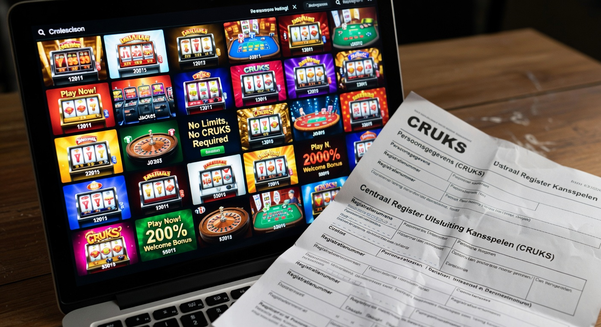
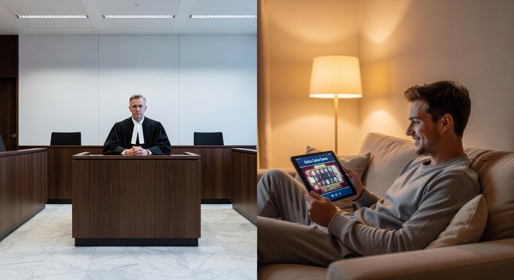
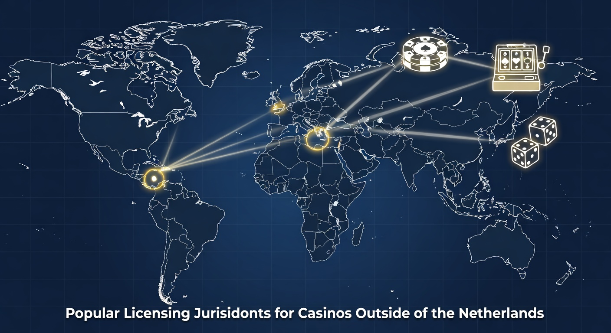
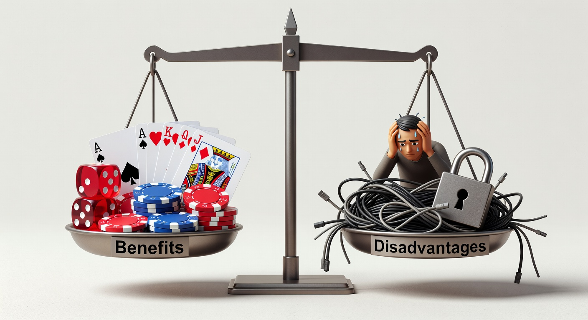
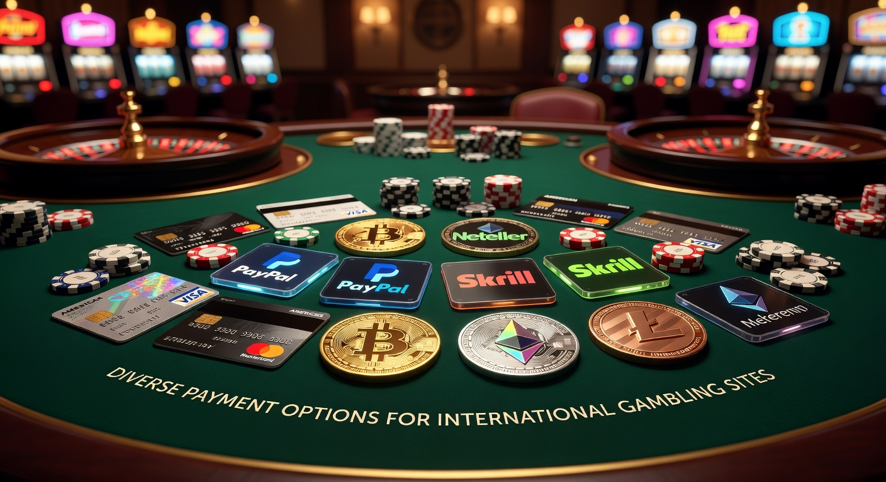

Online Casinos Zonder Cruks: De Complete Gids voor 2026
De wereld van het digitale gokken is in 2026 drastisch veranderd. Terwijl de Nederlandse markt strikt gereguleerd blijft, zoeken steeds meer spelers hun weg naar Online Casinos Zonder Cruks. Deze platformen bieden een alternatief voor de strikte beperkingen die door de Nederlandse overheid zijn opgelegd. In deze uitgebreide gids duiken we diep in de wereld van internationale goksite, de voordelen van spelen zonder centraal register, en waar je in 2026 op moet letten om veilig te blijven.
Het landschap van iGaming is geëvolueerd. Waar we vroeger enkel keken naar simpele slots, zien we nu geavanceerde metaverses en razendsnelle transacties. Voor veel Nederlandse gokkers is de term Centraal Register Uitsluiting Kansspelen (Cruks) een bekend begrip geworden. Het is een systeem dat bedoeld is om spelers tegen zichzelf te beschermen, maar de implementatie heeft geleid tot een groeiende vraag naar Online Casinos Zonder Cruks. Spelers verlangen naar meer vrijheid, hogere bonussen en een breder spelaanbod dat vaak niet beschikbaar is bij aanbieders met een lokale licentie.
In 2026 zijn de technologieën achter deze platformen volwassen geworden. Met de opkomst van gedecentraliseerde financiën en AI-gestuurde klantenservice, bieden deze sites een ervaring die vaak superieur is aan de gelicentieerde tegenhangers. Of je nu op zoek bent naar een 10 euro casino zonder cruks of een high-roller ervaring met crypto, de mogelijkheden zijn eindeloos. Deze gids fungeert als jouw kompas in de dynamische wereld van het buitenlandse online casino.
Beste Online Casino's Zonder Cruks van dit Moment
Het selecteren van de beste aanbieders in 2026 vereist een scherp oog voor detail. De markt is verzadigd, maar slechts enkele platformen voldoen aan onze strenge eisen voor veiligheid, snelheid en spelkwaliteit. De onderstaande tabel geeft een overzicht van de top-gerate platformen die momenteel de markt domineren.
| Casino Merk | Licentie | Welkomstbonus | Betaalmethoden | Uniek Kenmerk |
|---|---|---|---|---|
| Instant Casino | Curaçao | 200% tot €500 | iDEAL, Crypto, Apple Pay | Directe uitbetalingen |
| Lucky Block | Anjouan | 200% tot €10.000 | Ethereum, USDT, Bitcoin | Beste Crypto Integratie |
| Betninja Favoriet | Malta (MGA) | 100% + 200 Gratis Spins | Creditcard, Trustly, iDEAL | Hoogste RTP Slots |
| Golden Panda | Costa Rica | Cashback 10% Wekelijks | Google Pay, Revolut | Geen KYC limieten |
| TG.Casino | Curaçao | 150% Bonus | Telegram Betting, Crypto | Anoniem Gokken |
Bij het kiezen van een van deze Online Casinos Zonder Cruks, is het essentieel om te kijken naar jouw persoonlijke voorkeuren. Sommige spelers geven de voorkeur aan de anonimiteit van crypto, terwijl anderen de voorkeur geven aan de vertrouwde interface van een platform dat iDEAL-transacties ondersteunt via tussenpersonen. De merken in onze lijst zijn uitvoerig getest op hun betalingsmoraal en klantenservice in 2026.
Onze Criteria voor het Beoordelen van Buitenlandse Kansspelaanbieders
Onze beoordelingsmethode is in 2026 strenger dan ooit. We kijken niet alleen naar de oppervlakte, maar duiken diep in de algemene voorwaarden en de technische infrastructuur. Een cruciaal aspect is de aanwezigheid van top-softwareproviders zoals Pragmatic Play en Hacksaw Gaming. Als een casino deze namen voert, is dat vaak een teken van betrouwbaarheid, aangezien deze providers hun licenties niet riskeren door samen te werken met malafide sites.
Daarnaast evalueren we de snelheid van de klantenservice. In een wereld waar alles 24/7 doorgaat, verwachten we een live chat die binnen 60 seconden reageert. Ook de transparantie over de RTP (Return to Player) is een harde eis. Wij controleren of de spellen niet gecorrigeerd zijn en of de uitbetalingspercentages overeenkomen met de industriestandaarden. Alleen Online Casinos Zonder Cruks die op al deze punten een voldoende scoren, halen onze toplijst.
Wat is een Online Casino Zonder Cruks precies?

Om te begrijpen waarom Online Casinos Zonder Cruks zo populair zijn in 2026, moeten we eerst definiëren wat ze zijn. In essentie zijn dit goksites die niet over een vergunning van de Nederlandse Kansspelautoriteit (KSA) beschikken. Omdat ze geen Nederlandse licentie hebben, zijn ze niet aangesloten op de nationale database van uitgesloten spelers. Dit betekent dat zelfs als je geregistreerd staat in het Cruks-systeem, je nog steeds toegang hebt tot deze internationale platformen.
Deze casino's opereren vaak vanuit rechtsgebieden zoals Malta, Curaçao, of Costa Rica. Ze volgen de regels van hun eigen licentieverstrekker, die vaak flexibeler zijn dan de Nederlandse wetgeving. Dit betekent niet dat ze onveilig zijn; veel van deze licenties, zoals die van de MGA, staan wereldwijd zeer hoog aangeschreven. Het belangrijkste verschil is de mate van autonomie die de speler behoudt over zijn eigen gokgedrag en limieten.
Een ander kenmerk van een Online Casino Zonder Cruks is het ontbreken van iDIN-verificatie bij aanmelding. In Nederland is iDIN verplicht om je identiteit en leeftijd te verifiëren via je bank. Buitenlandse sites gebruiken vaak alternatieve methoden voor verificatie, of ze staan "no-account" spelen toe waarbij je direct kunt storten en spelen via diensten zoals Trustly of crypto-wallets. Dit verhoogt de privacy van de gebruiker aanzienlijk.
Hoe werkt het Cruks-register in Nederland?
Het Centraal Register Uitsluiting Kansspelen werd geïntroduceerd om gokverslaving te bestrijden. Wanneer een speler zich hier inschrijft (vrijwillig of onvrijwillig), wordt hij voor minimaal zes maanden uitgesloten van alle legale Nederlandse casino's en online aanbieders. Bij elke inlogpoging in Nederland wordt je BSN gecontroleerd tegen deze database. In 2026 zijn de controles via DigiD nog strikter geworden, waardoor er vrijwel geen mazen in het net meer zijn binnen de landsgrenzen.
Hoewel het systeem nobele bedoelingen heeft, ervaren veel gebruikers het als betuttelend. Spelers die een pauze wilden maar na drie maanden weer verantwoord willen spelen, zitten vast aan de termijn van zes maanden. Hierdoor wijken zij uit naar een Online Casino Zonder Cruks. Het systeem in Nederland is namelijk niet gekoppeld aan internationale databases, waardoor de blokkade enkel geldt voor sites met een .nl domein of een KSA-vergunning.
Waarom gokkers kiezen voor een platform zonder registratie
De keuze voor Online Casinos Zonder Cruks is vaak gebaseerd op een combinatie van factoren. Privacy staat bovenaan de lijst. In 2026 zijn mensen zich bewuster dan ooit van hun digitale voetafdruk. De verplichte koppeling met DigiD en de nauwlettende blik van de KSA op banktransacties schrikt veel mensen af. Bij een buitenlands casino kun je vaak met grotere anonimiteit spelen, zeker wanneer je gebruikmaakt van Ethereum of USDT.
Daarnaast spelen de limieten een grote rol. De Nederlandse overheid heeft in 2026 strenge stortingslimieten en speelduurbeperkingen opgelegd. Voor de recreatieve speler die incidenteel met een groter budget wil spelen, zijn deze regels verstikkend. Online Casinos Zonder Cruks bieden vaak veel ruimere limieten, zowel voor stortingen als voor inzetten aan de speeltafel. Dit trekt een publiek aan dat zelf verantwoordelijkheid wil dragen voor hun financiën.
Tot slot is er het bonusaspect. Nederlandse casino's zijn beperkt in de promoties die ze mogen aanbieden. Bij een casino bypass cruks vind je vaak gigantische welkomstpakketten, dagelijkse cashbacks en loyaliteitsprogramma's die in Nederland simpelweg verboden zijn. Voor veel spelers is dit de doorslaggevende factor om de grens over te gaan.
Is spelen bij een aanbieder zonder Nederlandse licentie legaal?

De legaliteit van Online Casinos Zonder Cruks is een grijs gebied waar veel misverstanden over bestaan. Vanuit het perspectief van de Nederlandse speler is het niet verboden om een website te bezoeken die in het buitenland gevestigd is. Er is geen wet die een burger verbiedt om een account aan te maken bij een casino in Malta of Curaçao. Het risico en de verantwoordelijkheid liggen echter volledig bij de speler zelf.
Voor de aanbieder ligt het anders. De Kansspelautoriteit probeert actief te voorkomen dat buitenlandse sites hun diensten aanbieden op de Nederlandse markt zonder vergunning. Dit doen zij door boetes op te leggen en betaalproviders te vragen transacties te blokkeren. Echter, veel beste casino zonder cruks omzeilen dit door geen specifieke marketing te voeren gericht op Nederland, maar wel Nederlandse spelers te accepteren die hen organisch vinden.
In 2026 is de handhaving door de KSA intensiever geworden, maar de aard van het internet maakt volledige blokkade onmogelijk. Spelers moeten zich ervan bewust zijn dat ze bij conflicten niet kunnen aankloppen bij de Nederlandse rechter of de KSA. Je bent aangewezen op de regulator van het land waar het casino gevestigd is. Daarom is het essentieel om enkel te spelen bij Online Casinos Zonder Cruks die een solide reputatie hebben opgebouwd op onafhankelijke review-platforms zoals Betninja.
De rol van de Kansspelautoriteit (KSA)
De KSA heeft als primaire taak het beschermen van de consument, het voorkomen van verslaving en het bestrijden van illegaliteit. In de afgelopen jaren hebben zij de regels voor legale aanbieders steeds verder aangescherpt. Dit heeft geresulteerd in een zeer veilige, maar ook zeer beperkte Nederlandse markt. Voor Online Casinos Zonder Cruks is de KSA vooral een waakhond die probeert de toegang tot deze sites te bemoeilijken.
De KSA waarschuwt regelmatig voor de gevaren van gokken zonder uitsluiting. Hun standpunt is dat zonder de bescherming van het Cruks-register, de kans op problematisch gokgedrag toeneemt. Hoewel dit voor een bepaalde risicogroep zeker waar is, voelt de gemiddelde ervaren speler zich door de KSA beperkt in zijn keuzevrijheid. Dit spanningsveld tussen bescherming en vrijheid blijft ook in 2026 de drijvende kracht achter de populariteit van het online gokken zonder uitsluiting.
Kansspelbelasting bij buitenlandse winsten
Een belangrijk aspect dat vaak vergeten wordt bij het spelen bij Online Casinos Zonder Cruks is de belastingplicht. In Nederland dragen legale casino's de belasting vaak al af, of is de winst voor de speler belastingvrij onder bepaalde voorwaarden. Bij winsten behaald in het buitenland ligt de verantwoordelijkheid bij de speler om dit op te geven bij de Belastingdienst.
In 2026 gelden er specifieke regels voor winsten binnen en buiten de EU. Winsten behaald bij een casino met een licentie uit een EU-land (zoals de MGA in Malta) zijn vaak vrijgesteld van Nederlandse kansspelbelasting vanwege Europese regelgeving over het vrije verkeer van diensten. Winsten uit landen zoals Curaçao of Anjouan moeten echter officieel aangegeven worden. Het is raadzaam om een overzicht bij te houden van je stortingen en winsten om problemen met de fiscus te voorkomen. Voor meer informatie over internationale wetgeving kun je de Wikipedia-pagina over gokken in Nederland raadplegen.
Populaire Licenties voor Online Casinos Zonder Cruks

Niet alle licenties zijn gelijk geschapen. Wanneer je de overstap maakt naar Online Casinos Zonder Cruks, is de licentie het eerste waar je naar moet kijken. Het is het keurmerk dat aangeeft dat het casino aan bepaalde standaarden voldoet. In 2026 zien we een verschuiving waarbij nieuwe jurisdicties opkomen terwijl oude hun regelgeving moderniseren.
Een goede licentie garandeert dat de spellen eerlijk verlopen via gecertificeerde Random Number Generators (RNG) en dat de spelerstegoeden gescheiden worden gehouden van het werkkapitaal van het bedrijf. Hieronder bespreken we de meest voorkomende licenties die je zult tegenkomen bij een betrouwbaar casino zonder Nederlandse vergunning.
Malta Gaming Authority (MGA)
De MGA licentie wordt nog steeds beschouwd als de "gouden standaard" binnen de EU voor Online Casinos Zonder Cruks. Malta was een van de eerste landen die online gokken reguleerde en heeft een zeer professionele autoriteit opgebouwd. Een MGA-licentie betekent dat het casino moet voldoen aan strenge anti-witwasregels en uitgebreide protocollen voor spelersbescherming heeft.
Hoewel MGA-casino's niet zijn aangesloten op Cruks, hebben ze vaak wel hun eigen zeer robuuste zelf-uitsluitingstools. In 2026 is de samenwerking tussen MGA-aanbieders verbeterd, waardoor een speler die zich bij één MGA-site uitsluit, soms ook bij andere sites onder dezelfde vlag wordt geblokkeerd. Dit biedt een extra laag veiligheid zonder de strikte beperkingen van de Nederlandse wet. Veel spelers zoeken specifiek naar een casino met een MGA licentie vanwege de Europese rechtszekerheid.
Curaçao Gaming Control Board
Curaçao is historisch gezien een van de meest populaire plekken voor Online Casinos Zonder Cruks om zich te vestigen. In 2024 en 2025 heeft het eiland een enorme hervorming van zijn gokwetgeving doorgevoerd, waardoor de licentie in 2026 veel meer aanzien heeft dan voorheen. De oude "master licenses" zijn vervangen door een direct vergunningstelsel onder de Curaçao Gaming Control Board.
Casino's uit Curaçao staan bekend om hun enorme flexibiliteit wat betreft betaalmethoden. Hier vind je de meeste innovaties op het gebied van crypto en snelle registraties. Voor een 5 euro casino zonder cruks ben je hier vaak aan het juiste adres, aangezien de operationele kosten lager liggen dan in Europa, wat resulteert in lagere minimumstortingen voor de spelers.
Kahnawake Gaming Commission
De Kahnawake Gaming Commission, gevestigd in Canada, is een gerespecteerde maar minder bekende licentieverstrekker voor Online Casinos Zonder Cruks. Ze zijn al sinds de jaren '90 actief en hebben een sterke focus op ethisch gokken. Veel casino's die zich richten op de Noord-Amerikaanse en Europese markt kiezen voor deze licentie vanwege de stabiliteit en de redelijke kosten.
Spelen bij een Kahnawake-casino biedt een hoge mate van betrouwbaarheid. Ze hebben een onafhankelijk orgaan voor het afhandelen van klachten van spelers, wat een cruciaal vangnet is wanneer je buiten het Nederlandse stelsel gokt. In 2026 zien we een toename van hybride casino's die zowel een Curaçao als een Kahnawake licentie aanhouden om hun wereldwijde dekking te optimaliseren.
Anjouan Gaming License
Een relatief nieuwe speler op de markt van Online Casinos Zonder Cruks is de Anjouan licentie (onderdeel van de Comoren). In 2026 is deze licentie populair geworden onder operators die zich richten op de allernieuwste technologieën zoals gedecentraliseerde apps (dApps) en Web3-gaming. Hoewel de regels hier iets soepeler zijn, biedt het wel een wettelijk kader voor operators om legaal wereldwijd te opereren.
Spelers moeten bij Anjouan-gelicentieerde sites extra goed letten op de reputatie van het specifieke merk. Omdat de barrière voor toegang lager is, vind je hier zowel verborgen parels als platformen die je beter kunt vermijden. Onze experts controleren sites met deze licentie extra streng op hun uitbetalingsgeschiedenis en de kwaliteit van hun softwarepartners zoals Relax Gaming en Games Global.
De Belangrijkste Voordelen en Nadelen

Het spelen bij Online Casinos Zonder Cruks brengt zowel kansen als risico's met zich mee. Het is belangrijk om een evenwichtig beeld te hebben voordat je besluit ergens geld te storten. De balans slaat voor veel spelers door naar het positieve, maar de nadelen mogen niet genegeerd worden.
Hieronder volgt een overzicht van de belangrijkste aspecten van het gokken buiten het Nederlandse systeem in 2026:
- Voordeel: Grotere Spelvrijheid. Geen kunstmatige pauzes van 5 seconden tussen spins of beperkingen op de "auto-play" functie.
- Voordeel: Hogere Bonussen. Online Casinos Zonder Cruks bieden vaak welkomstbonussen die oplopen tot duizenden euro's, inclusief honderden gratis spins.
- Voordeel: Meer Betaalopties. Van iDEAL (via gateways) tot Ethereum en Google Pay.
- Nadeel: Minder Consumentenbescherming. Je kunt niet terugvallen op de Nederlandse KSA bij geschillen.
- Nadeel: Zelfbeheersing is Cruciaal. Omdat het Cruks-filter ontbreekt, moet de speler zelf zijn grenzen bewaken.
- Voordeel: Toegang tot Global Pools. Grotere progressieve jackpots die wereldwijd worden gevoed.
Voor velen wegen de voordelen, zoals de afwezigheid van de iDIN-verificatie en de mogelijkheid tot anoniem gokken, zwaarder dan de nadelen. Het is echter een persoonlijke afweging. Een verantwoordelijke speler weet dat hij bij een Online Casino Zonder Cruks zelf de regie moet nemen over zijn speelgedrag.
Betaalmethoden bij Internationale Goksites

De manier waarop we betalen bij Online Casinos Zonder Cruks is in 2026 onherkenbaar vergeleken met vijf jaar geleden. Snelheid en privacy zijn de belangrijkste pijlers geworden. Waar we voorheen afhankelijk waren van trage bankoverschrijvingen, verwachten we nu dat ons saldo binnen enkele seconden is bijgewerkt, ongeacht de methode die we gebruiken.
De innovatie op het gebied van fintech heeft ervoor gezorgd dat zelfs internationale sites een zeer lokale ervaring kunnen bieden. Veel online casino zonder Cruks-registratie maken gebruik van slimme tussenpersonen om populaire Nederlandse betaalmethoden aan te bieden zonder direct verbonden te zijn met de Nederlandse banken.
Storten met iDEAL en alternatieven
Hoewel iDEAL de onbetwiste koning blijft in Nederland, is de directe integratie bij Online Casinos Zonder Cruks soms lastig vanwege de druk van de KSA op banken. Echter, in 2026 maken veel sites gebruik van alternatieven zoals Volt of Klarna die in feite dezelfde "bank-to-bank" ervaring bieden. Je logt in bij je eigen bank en autoriseert de betaling, maar op je afschrift staat een algemene betalingsprovider in plaats van de naam van het casino.
Daarnaast zien we een enorme vlucht in het gebruik van Apple Pay en Google Pay. Deze methoden zijn extreem veilig omdat ze gebruikmaken van biometrische verificatie op je telefoon. Voor een 10 euro deposit casino zonder cruks zijn dit ideale methoden vanwege de lage transactiekosten. Het stelt spelers in staat om snel en discreet een klein bedrag te storten om een nieuw platform uit te proberen.
De opkomst van Crypto en E-wallets
De echte revolutie bij Online Casinos Zonder Cruks vindt plaats in de crypto-sector. In 2026 is het gebruik van Ethereum, Bitcoin en stablecoins zoals USDT de standaard geworden voor een grote groep spelers. Het biedt ongeëvenaarde anonimiteit en, belangrijker nog, instant uitbetalingen. Bij een traditioneel casino moet je vaak 24 tot 48 uur wachten op een uitbetaling; bij een crypto-casino staat het geld vaak binnen minuten in je wallet.
E-wallets zoals MiFinity, Jeton en AstroPay vullen het gat voor spelers die geen crypto willen gebruiken maar wel snelheid wensen. Deze wallets fungeren als een buffer tussen je bankrekening en het casino, wat een extra laag privacy biedt. Voor spelers die op zoek zijn naar een casino met snelle uitbetalingen, is een e-wallet vaak de beste keuze naast crypto.
Bonusaanbod bij Online Casinos Zonder Cruks
Een van de grootste trekpleisters van Online Casinos Zonder Cruks is zonder twijfel het bonusbeleid. In Nederland zijn bonussen streng gereguleerd en vaak beperkt tot een kleine welkomstbonus voor nieuwe spelers van 24 jaar en ouder. In het buitenland gelden deze beperkingen niet, wat resulteert in een veel creatiever en lucratiever aanbod.
Bonussen zijn echter meer dan alleen gratis geld. Het is belangrijk om de kleine lettertjes te lezen, ook bij de beste casino zonder cruks. De "wagering requirements" (rondspeelvoorwaarden) bepalen hoe vaak je de bonus moet inzetten voordat je winsten kunt opnemen. In 2026 zien we gelukkig een trend naar eerlijkere voorwaarden, waarbij sommige casino's zelfs "no-wagering" bonussen aanbieden om spelers aan te trekken.
Welkomstbonussen en Gratis Spins
De welkomstbonus bij Online Casinos Zonder Cruks is vaak een pakket dat over meerdere stortingen wordt verdeeld. Het is niet ongewoon om een 100% match op je eerste storting te krijgen, gevolgd door 50% op de tweede en weer 100% op de derde. Dit wordt bijna altijd vergezeld door een flink aantal gratis spins op populaire slots zoals die van Pragmatic Play.
Voor de budgetbewuste speler zijn er de "no deposit" bonussen. Hoewel zeldzamer in 2026, bieden sommige nieuwe Online Casinos Zonder Cruks een klein bedrag of spins aan puur voor het aanmaken van een account. Dit is de perfecte manier om de interface en de snelheid van de site te testen zonder eigen risico. Let wel op de maximale winstlimieten die vaak aan deze gratis extraatjes verbonden zijn.
Cashback regelingen en VIP-programma's
Wat Online Casinos Zonder Cruks echt onderscheidt van de Nederlandse markt, is de focus op klantbehoud via cashback en VIP-programma's. Een cashback bonus geeft je een percentage van je verliezen terug, vaak op wekelijkse of zelfs dagelijkse basis. In 2026 is een 10% tot 20% cashback regeling zonder rondspeelvoorwaarden de norm geworden bij top-sites zoals Instant Casino.
VIP-programma's zijn bij een casino zonder Cruks vaak veel diepgaander. Spelers klimmen door verschillende niveaus en ontgrendelen extra voordelen zoals een persoonlijke accountmanager, hogere opnamelimieten en exclusieve uitnodigingen voor evenementen. Voor de serieuze gokker biedt dit een waarde die in de strikt gereguleerde Nederlandse markt simpelweg niet te vinden is. Het beloont loyaliteit op een manier die verder gaat dan een simpele stortingsbonus.
Spelaanbod: Slots, Live Casino en Sportsbook
Het hart van elk Online Casino Zonder Cruks is natuurlijk het spelaanbod. Omdat deze sites niet gebonden zijn aan de restricties van de Nederlandse licentie, kunnen ze samenwerken met elke softwareleverancier ter wereld. Dit resulteert in bibliotheken van vaak meer dan 5.000 verschillende spellen, variërend van klassieke fruitautomaten tot de meest geavanceerde live game shows.
De kwaliteit van de spellen is in 2026 naar een ongekend niveau gestegen. We zien meer interactie, betere graphics en innovatieve spelmechanismen. De aanwezigheid van top-providers is een kwaliteitsstempel voor Online Casinos Zonder Cruks. Bedrijven zoals Hacksaw Gaming staan bekend om hun hoge volatiliteit slots, terwijl Relax Gaming en Games Global de markt domineren met hun enorme netwerk van jackpotspellen.
In het live casino segment is de ervaring bijna niet meer te onderscheiden van een fysiek casino. Met 4K-streams en professionele dealers die vaak meerdere talen spreken, waaronder soms zelfs Nederlands, is de sfeer optimaal. Naast klassiekers zoals Blackjack en Roulette, zijn game shows zoals "Crazy Time" of "Monopoly Live" razend populair bij Online Casinos Zonder Cruks. Deze spellen combineren gokken met entertainment op een manier die traditionele tafelspellen niet kunnen.
Veel Online Casinos Zonder Cruks fungeren ook als een compleet sportsbook. Hier kun je wedden op alles van de Eredivisie tot niche sporten en e-sports. De odds zijn vaak scherper dan bij de Nederlandse staatsdeelnemingen, en de opties voor "live betting" zijn uitgebreider. Of je nu op zoek bent naar een 5 euro deposit casino zonder cruks voor een kleine weddenschap of een platform voor grote sportweddenschappen, de internationale markt heeft het allemaal.
Trends in de Gokindustrie voor 2026
De gokindustrie staat nooit stil, en 2026 is een jaar van grote technologische sprongen. De belangrijkste trend bij Online Casinos Zonder Cruks is de verdere integratie van Artificiële Intelligentie. AI wordt niet alleen gebruikt voor klantenservice, maar ook om gepersonaliseerde spelervaringen te creëren. Het casino weet precies welke slots je leuk vindt en biedt je bonussen aan die passen bij jouw speelstijl.
Een andere opvallende ontwikkeling is de opkomst van VR (Virtual Reality) casino's. Met de betaalbaarheid van VR-brillen in 2026, bieden steeds meer Online Casinos Zonder Cruks de mogelijkheid om een virtuele casinovloer te betreden. Je kunt rondlopen, met andere spelers praten en fysiek aan de hendel van een slot trekken. Dit tilt de immersie naar een niveau dat we ons enkele jaren geleden nauwelijks konden voorstellen.
Ook de decentralisatie zet door. We zien steeds meer "Pure Crypto Casino's" waar alles, van de spellen tot de administratie, op de blockchain draait. Dit garandeert 100% eerlijkheid (provably fair) en elimineert de noodzaak voor traditionele banken. Voor spelers in een online casino zonder Cruks-registratie betekent dit nog meer privacy en nog minder afhankelijkheid van gecentraliseerde instanties.
Tips voor Veilig en Verantwoord Spelen
Hoewel Online Casinos Zonder Cruks veel voordelen bieden, brengt het ook een grotere verantwoordelijkheid met zich mee. Zonder de vangnetten van de Nederlandse overheid, moet je zelf de controle houden. Veilig spelen begint met het kiezen van het juiste platform, maar het eindigt bij jouw eigen gedrag. Hier zijn enkele essentiële tips voor 2026:
- Stel je eigen limieten in. Bijna elk betrouwbaar casino bypass cruks biedt tools aan om stortings-, verlies- en tijdlimieten in te stellen. Gebruik deze!
- Speel alleen met geld dat je kunt missen. Gokken moet entertainment zijn, geen manier om geld te verdienen.
- Ken de regels. Lees de algemene voorwaarden van bonussen goed door. Niets is vervelender dan een grote winst die je niet kunt opnemen vanwege een overtreding van de regels.
- Gebruik veilige verbindingen. Log nooit in op je casino-account via een openbaar wifi-netwerk. Gebruik indien mogelijk een VPN voor extra privacy, maar controleer of het casino dit toestaat.
- Luister naar de experts. Sites zoals Betninja bieden up-to-date informatie en waarschuwingen over onbetrouwbare aanbieders.
Het is ook belangrijk om de signalen van problematisch gokken te herkennen. Als je merkt dat je probeert verliezen terug te winnen of als gokken invloed heeft op je dagelijks leven, zoek dan hulp. Ook buiten het Cruks-systeem zijn er talloze internationale organisaties zoals BeGambleAware die ondersteuning bieden. Meer informatie over verantwoord gokken is te vinden op deze autoritaire bron.
Veelgestelde Vragen over Gokken Zonder Cruks
Is gokken bij Online Casinos Zonder Cruks veilig?
Ja, mits je kiest voor een aanbieder met een gerespecteerde licentie zoals de MGA of de vernieuwde Curaçao-licentie. Deze casino's worden streng gecontroleerd op eerlijk spel en financiële stabiliteit.
Kan ik met iDEAL betalen bij een casino zonder Cruks?
Vaak wel, maar meestal indirect via betaalproviders zoals Volt, Klarna of Jeton. Voor de gebruiker werkt dit nagenoeg hetzelfde als een directe iDEAL-betaling.
Hoe lang duurt een uitbetaling?
Dit hangt af van de methode. Bij crypto en e-wallets is dit vaak binnen enkele minuten tot uren. Bij creditcards of bankoverschrijvingen kan dit 1 tot 3 werkdagen duren.
Zijn de winsten bij buitenlandse casino's belast?
In 2026 moet je winsten van buiten de EU in principe zelf opgeven bij de Belastingdienst. Winsten binnen de EU zijn onder de huidige regelgeving vaak vrijgesteld, maar raadpleeg altijd een expert of de site van de Belastingdienst.
Wat is het beste casino zonder Cruks in 2026?
Er is niet één "beste" keuze, omdat dit afhangt van je voorkeuren voor spellen en betaalmethoden. Echter, platformen zoals Instant Casino en merken aanbevolen door Betninja scoren consequent hoog in onze tests.
Moet ik iDIN gebruiken bij registratie?
Nee, een van de grote voordelen van Online Casinos Zonder Cruks is dat zij geen gebruikmaken van iDIN. Je identiteit wordt meestal geverifieerd via het uploaden van documenten (KYC) bij je eerste grote uitbetaling.
In 2026 is de markt voor Online Casinos Zonder Cruks volwassener en toegankelijker dan ooit. Of je nu kiest voor de anonimiteit van crypto, de enorme bonussen, of het ongefilterde spelaanbod van top-providers als Pragmatic Play, de mogelijkheden zijn eindeloos. Zolang je kiest voor betrouwbare platformen en je eigen grenzen bewaakt, bieden deze internationale sites een superieur alternatief voor het strikt gereguleerde Nederlandse aanbod. Veel succes en speel verantwoord!

Expert in online casino's en digitaal gokken met meer dan 8 jaar ervaring in de sector.